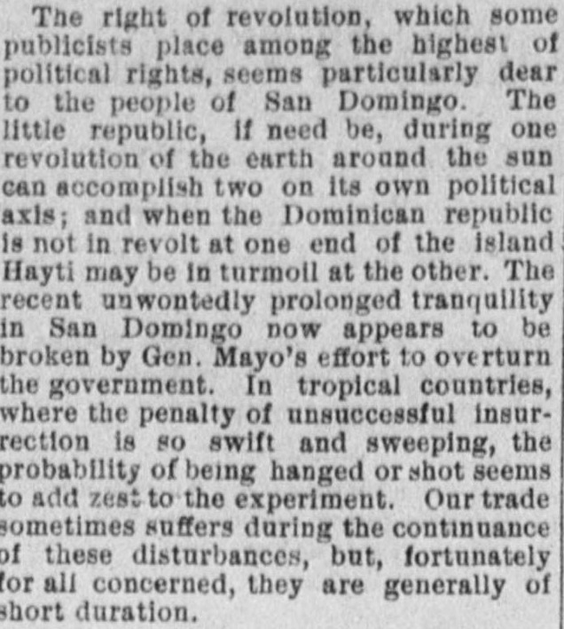
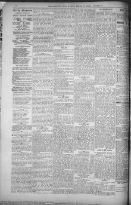

See the full pageVer la página completaWar In Sonora and as n trailer of savsgo Indians mayGuerra en Sonora y como un rastro de indios salvajes puede
The Fort Worth daily gazette reported on August 17, 1886, that the recent prolonged tranquility in San Domingo appeared to be broken by General Mayo's effort to overturn the government. The newspaper noted that while such disturbances sometimes caused trade to suffer, they were generally of short duration.El Fort Worth daily gazette reportó el 17 de agosto de 1886 que el prolongado sosiego disfrutado por Santo Domingo parecía quebrantarse ante la tentativa armada del general Moya para derrocar al gobierno. Apuntó el diario que, si bien tales revueltas afectaban temporalmente el giro mercantil, solían ser de efímera duración.
FULL TEXT:TRADUCCIÓN:
The right of revolution, which some publicists place among the highest of political rights, seems particularly dear to the people of San Domingo. The little republic, if need be, during one revolution of the earth around the sun can accomplish two on its own political axis; and when the Dominican republic is not in revolt at one end of the island Hayti may be in turmoil at the other. The recent unwontedly prolonged tranquility in San Domingo now appears to be broken by Gen. Mayo's effort to overturn the government. In tropical countries, where the penalty of unsuccessful insurrection is so swift and sweeping, the probability of being hanged or shot seems to add zest to the experiment. Our trade sometimes suffers during the continuance of these disturbances, but, fortunately for all concerned, they are generally of short duration.El derecho de revolución, que algunos publicistas colocan entre los más altos de los derechos políticos, parece particularmente querido para el pueblo de Santo Domingo. La pequeña república, si es necesario, durante una revolución de la tierra alrededor del sol puede lograr dos sobre su propio eje político; y cuando la república dominicana no está en revuelta en un extremo de la isla Haití puede estar en tumulto en el otro. La reciente tranquilidad inusualmente prolongada en Santo Domingo ahora parece estar rota por el esfuerzo del general Mayo de derrocar el gobierno. En países tropicales, donde la pena de la insurrección fracasada es tan rápida y radical, la probabilidad de ser ahorcado o fusilado parece añadir sabor al experimento. Nuestro comercio a veces sufre durante la continuación de estas perturbaciones, pero, afortunadamente para todos los interesados, generalmente son de corta duración.
Fort Worth Daily Gazette. Fort Worth, Tex., August 17, 1886.
See the original at the Library of CongressVer el original en la Biblioteca del Congreso
Published by: Stock Journal Pub. Co.Publicado por: Stock Journal Pub. Co.
Edition: Edition 1Edición: edición 1
Page: 2Página: 2
Frequency: daily (1882–1891)Frecuencia: diario (1882–1891)
Collection: Chronicling America, Library of CongressColección: Chronicling America, de la Biblioteca del Congreso
LCCN: sn86064205LCCN: sn86064205
ISSN: 1946-6080ISSN: 1946-6080
OCLC: 13695711OCLC: 13695711
Rights: public domain, according to the Library of CongressDerechos: dominio público, según la Biblioteca del Congreso